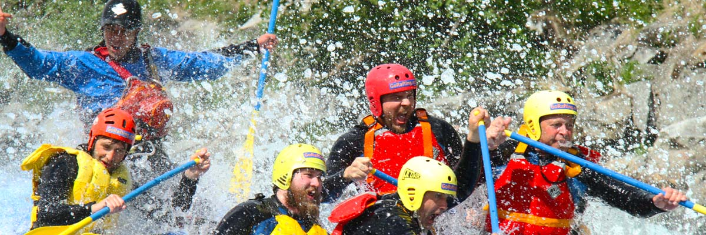
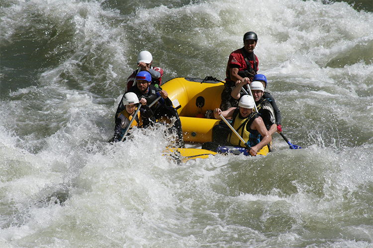
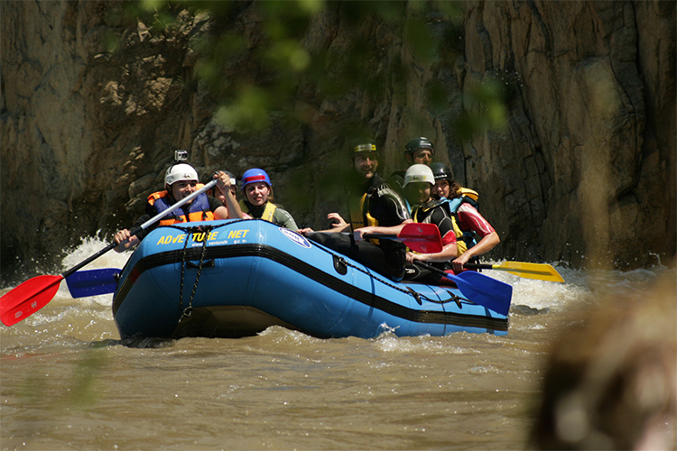
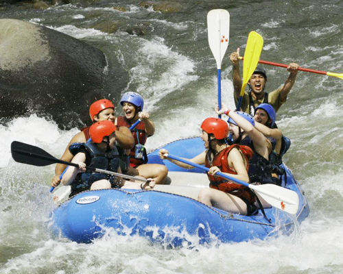

Ríos Mexicanos

A tan solo a 45 minutos de Cuernavaca, al sur del Estado de Morelos se encuentra el río Amacuzac. Es un río ideal para practicar descenso de río en balsas inflables, también llamado Rafting.
Las aguas de este río proceden de los escurrimientos del Nevado de Toluca, pasando por hondas cañadas e introduciéndose al subsuelo en los ríos subterráneos de San Jerónimo y Chontacoatlán, que al emerger en el sitio llamado Dos Bocas en el Parque Nacional Grutas de Cacahuamilpa, se unen para conformar el río Amacuzac, el más caudaloso del Estado de Morelos.
El río Amacuzac tiene varias secciones para practicar Rafting en Morelos.
Aquí podrás encontrar las diferentes opciones, sus temporadas y recomendaciones.

13 kilómetros de río, con rápidos de categoría III, y con nivel alto de agua algunos son categoría IV.
Es un recorrido de medio día, desde la llegada, platica de seguridad, prepararse para el río, el descenso, cargar el equipo para regresar al Punto de Encuentro.
La temporada de agua alta es de Julio a Octubre, y agua baja de Noviembre a Abril.
La actividad se da en un ambiente de aire libre, por ello te recomendamos que te prepares con ropa cómoda y fresca para caminar en el campo, así como ropa para protegerte del sol.
Traer una muda de ropa y calzado para mojar en el río, recomendamos ropa sintética.
Traer agua y snack, así como informar si tienes alguna condición especial de salud.
El recorrido te incluye equipo certificado para la actividad, el cual se compone de:
Precio: $750 por persona.

Este recorrido de río, es ideal para toda la familia o para quienes quieren disfrutar de un día tranquilo observando aves.
6 kilómetros de río donde los pequeños pueden disfrutar de un descenso agradable y seguro, sin importar el nivel del río.
Una sección donde ademas de disfrutar de un buen clima, se puede observar de aves exoticas como martines pescadores, espatulas rosadas y otras más.
La actividad se da en un ambiente de aire libre, por ello te recomendamos que te prepares con ropa comoda y fresca para caminar en el campo, asi como ropa para protegerte del sol.
Traer una muda de ropa y calzado para mojar en el río, recomendamos ropa sintetica.
Traer agua y snack, asi como informar si tienes alguna condición especial de salud.
El recorrido te incluye equipo certificado para la actividad, el cual se compone de:
Precio: $580 por adulto.
$430 por niño.

Esta sección es un recorrido especial y solo se recorre de Julio a Octubre.
Este recorrdio es de todo el día y es para toda la familia. Inicia con una visita a las Grutas de Cacahuamilpa, después del recorrido caminaremos hacia el río donde nos esperarán las balsas, ahí se tendrá un refrigerio y se harán los preparativos para la actividad.
El descenso es de 13km con rápidos clase II y III, dentro de un magnífico cañón y terminar con pequeña comida local.
La actividad se da en un ambiente de aire libre, por ello te recomendamos que te prepares con ropa cómoda y fresca para caminar en el campo, así como ropa para protegerte del sol.
Traer una muda de ropa y calzado para mojar en el río, recomendamos ropa sintética.
Traer agua y snack, así como informar si tienes alguna condición especial de salud.
El recorrido te incluye equipo certificado para la actividad, el cual se compone de:
Precio: $850 por persona.
$730 por niño.
Contáctanos para más información, con gusto te ayudaremos a satisfacer cualquier duda que tengas.
A tu recorrido le puedes agregar otros beneficios como la visita a un balneario o una carnita asada.
Organizamos paquetes especiales para escuelas y empresas.